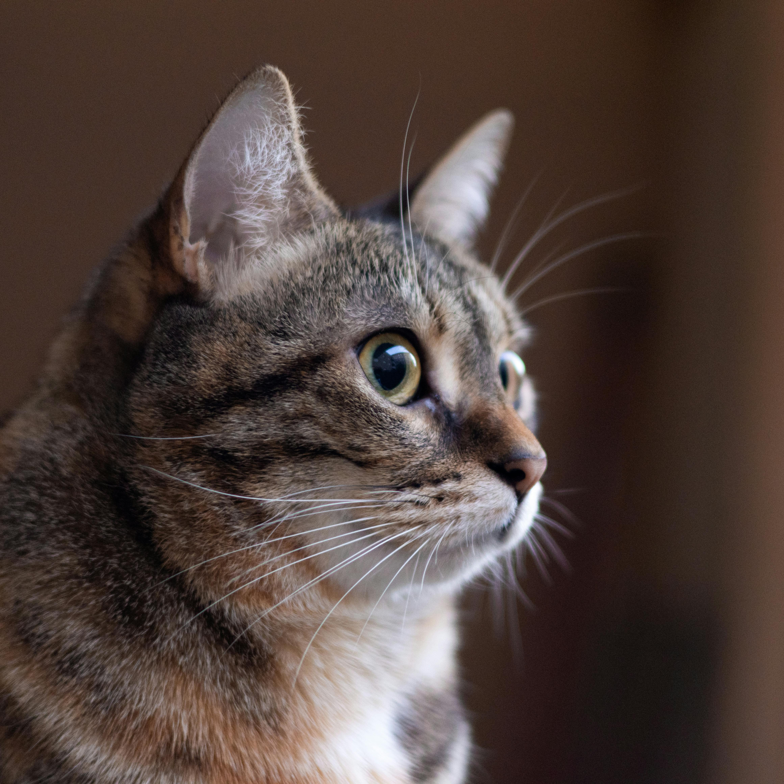

Garfield Escobar
About Me
A curious and clever feline with a knack for pawing at code and
chasing bugs. I spend my days exploring the world of web
development, building responsive layouts, and learning new tricks in
HTML, CSS, and JavaScript. Whether it’s scratching at frontend
designs or prowling through backend logic, I’m always looking for
ways to sharpen my claws and grow into a full-stack cat-developer.
Clean code is my comfort zone, and every new project is a chance to
pounce on new knowledge.